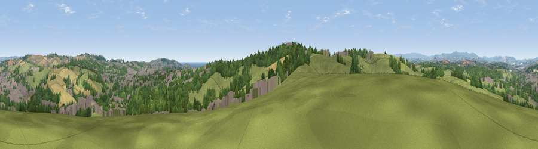

Viewpoint near Kingskerswell
#10922 in England · top 23% of its area beats it · near Kingskerswell · access?Where it is
The exact computed spot (SX 88075 66025). Click the marker for map links.
Public access: no public right of way or access land is recorded at this exact spot — it may be on private land. Computed from Natural England's CRoW access layer and OpenStreetMap rights of way — not the legal definitive map. Always verify locally.
The view, rendered

A 360° render of this exact spot computed from the terrain model, tree cover and land cover — summer colours, afternoon light, calibrated against photographs of famous viewpoints. Real trees, hedges and buildings will differ in detail.
The panorama
Grey silhouette: terrain skyline in each direction (720 bearings, Earth curvature and refraction included). Dashed green: skyline with trees (+15 m) and buildings (+8 m) as obstacles. Blue strip: how far the ground is visible on each bearing.
Where the view opens
Wedge length = distance to the farthest visible ground on that bearing (vegetation-aware). Rings at 10, 25 and 50 km.
What fills the view
43% grassland · 32% woodland · 12% built-up · 12% cropland ·
Angular shares of the visible panorama (visual magnitude), not map area. Landscape diversity 0.56 (0–1 Shannon).
Key numbers
More beautiful places nearby
The staircase of upgrades: each row has a higher view potential than everything closer. Driving times are estimates from straight-line distance, calibrated against real road routing — check an actual route before setting out.
| Place | Direction | Drive | Score |
|---|---|---|---|
| Viewpoint near Marldon | SSW · 1 km | ~3 min | 72.3 |
| Great Hill | ENE · 4 km | ~9 min | 79.7 |
| Beacon Hill | SSW · 5 km | ~10 min | 82.3 |
| Viewpoint near Stokeinteignhead | NE · 6 km | ~13 min | 84.1 |
| High Peak | NE · 30 km | ~47 min | 85.3 |
| Golden Cap | ENE · 59 km | ~81 min | 88.7 |
| The Knoll | ENE · 69 km | ~92 min | 91.0 |
50.48332, -3.57896 · source: screening · position refined by local search. Computed location — check access rights before visiting.